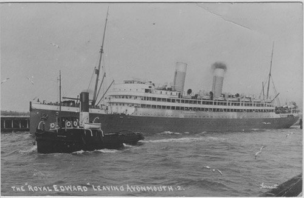
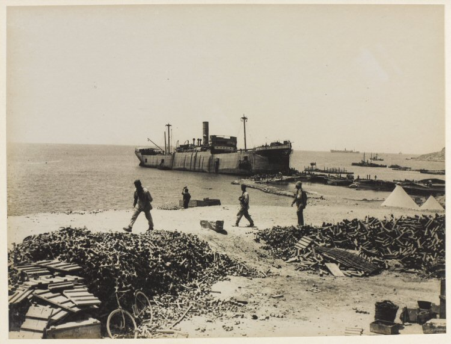
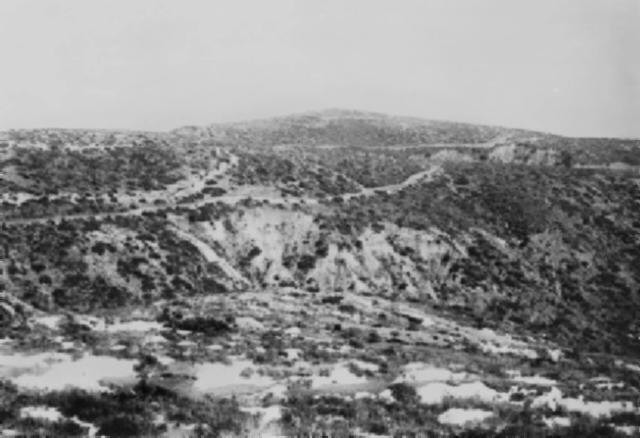

War was declared on Germany on 4 August 1914 and it was not long before Albert Warren attended the army recruitment office in Coventry to offer himself for military service. Albert re-enlisted on 12 August 1914 and was posted to a new battalion, the 9th Royal Warwickshire Regiment, being raised at Warwick. Having been certified as fit for service on 13 August he began his second spell of military service as Private 2765. The 9th Royal Warwicks were formed as part of Kitchener's First New Army and shortly moved to Salisbury Plain for basic training at Tidworth, joining the 39th Brigade of the 13th (Western) Division.
Within eight weeks, on 12 October, Albert was appointed Lance Corporal. In January 1915 the battalion moved to Basingstoke and on 15 February Albert was promoted again to Lance Sergeant. Towards the end of February 1915 the Western Division concentrated at Blackdown (Aldershot) in Hampshire. In March Albert was promoted to Sergeant. His rapid promotion as a NCO obviously related to his previous experience in the Sherwood Foresters.

They left Blackdown from Frimley station on 17–18 June 1915 for Avonmouth docks, where they boarded H.M.T. Royal Edward for Gallipoli as part of the Mediterranean Expeditionary Force.

The battalion first landed at Alexandria before moving to Mudros on the island of Lemnos, arriving on 9 July 1915. Four days later they landed on 'V' Beach near Cape Helles, Gallipoli. They returned to Mudros at the end of the month, and the entire Division landed at ANZAC Cove between 3 and 5 August 1915. They were in action in the Battle of Sari Bair, the Battle of Russell's Top and the Battle of Hill 60 at ANZAC, before transferring to Suvla Bay. A more detailed account of this period is retold by CL Kingsford in his book Story of the Royal Warwickshire Regiment:
The entry of Turkey into the war led to the decision to attempt to force the Dardanelles. In the heroic struggle on April 28, 1915, the Allied Armies under Sir Ian Hamilton won a footing at the southern end of the peninsula of Gallipoli round Cape Helles, [Major J. H. D. Costeker, D.S.O., of the Royal Warwickshire, who was brigade-major of the 88th Brigade, was killed at Cape Helles on April 28] and the Australians and New Zealanders established themselves higher up near the position which came to be known as Anzac Cove. All the efforts of the next month secured only a slight gain of ground; if the undertaking was to be made successful, it was clear that a great reinforcement would be required. For this purpose during June and July three divisions of the New Army and two Territorial Divisions were sent out from England. Amongst them came the 9th (Service) Battalion of the Royal Warwickshire in the 39th Brigade [The other battalions were 7th North Stafford, 9th Worcester and 7th Gloucester] of the 13th Division.
On June 17, the 9th Royal Warwickshire, under Lieut.-Colonel C. H. Palmer, embarked at Avonmouth, and reached Mudros, in the island of Lemnos, on July 9. Four days later they landed on Beach V, near Cape Helles, where the ship 'River Clyde', from which a part of the immortal 29th Division had disembarked, still lay. For a fortnight they served off and on in the trenches, losing their colonel, who was shot by a sniper on July 25. Colonel Palmer had raised and trained the battalion, which owed much of its fighting spirit and efficiency to his unselfish enthusiasm and ability. A few days previously Lieut. Grundy had been killed, and Lieut. J. Cattanach (the doctor) mortally wounded. Of other ranks 9 were killed and 28 wounded. On July 29 the battalion returned to Lemnos, and on August 3 embarked again for Anzac Cove, where they were to take part in the impending great attack.

Sir Ian Hamilton's plan was to endeavour to gain the heights of Koja Chemen (or Hill 971) and the seaward ridges by an advance from Anzac Cove, simultaneously with a new landing to be made further north at Suvla Bay. The whole ridge, of which Koja Chemen is the highest point, is called Sari Bair. Underneath it on the north lies a long spur known as Rhododendron Ridge, below which a wide water course, split into two forks, both called Aghyl Dere, leads up to Koja Chemen.

The 9th Royal Warwickshire landed in the early morning of 4 August. During the first two days (6–7 August) they were in divisional reserve but advanced up Aghyl Dere. On 8 August they crossed Bauchop's Hill to the ridge beyond. The crisis of the attack came on 9 August with the assault of Koja Chemen. Three battalions — the 9th Royal Warwickshire, the 6th South Lancashire, and the 6th Gurkhas — reached the crest, whence they could look down on the waters of the Dardanelles and seemed to have victory in their grasp. But the troops on the right were late, and when the Turks rallied to a counter-attack our men were forced back to the lower slopes. One company of the Royal Warwickshire held on till they were surrounded, and as it is supposed, all perished. When at night the Royal Warwickshire was withdrawn to reserve no officers and only 248 men were left. During the four days five officers were killed, nine wounded and one missing; of other ranks 57 were killed, 227 wounded and 117 missing.

The remaining weeks of August 1915 proved generally uneventful with occasional service in the front trenches. On 28 August 1915 Albert was promoted to Company Sergeant Major (Warrant Officer Class II). Three days later the battalion moved to reserve trenches at Salt Lake near Suvla Bay. On 19 September the battalion, now over 500 strong, went up to trenches near Chocolate Hill, and for the next three months occupied the same piece of ground without rest or change and under regular bombardment. It was during this period that Albert was injured in the knee, possibly by shelling on 7 October. He was evacuated and eventually found himself back in Britain on 20 November 1915. A long period of recovery followed before he was posted to the 3rd Royal Warwickshire Regiment (a training battalion) on the Isle of Wight on 17 March 1916.